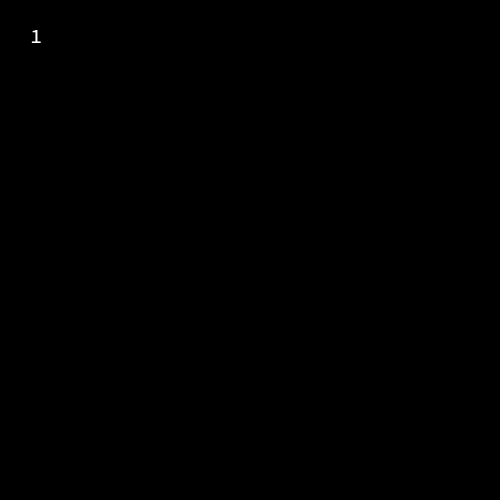
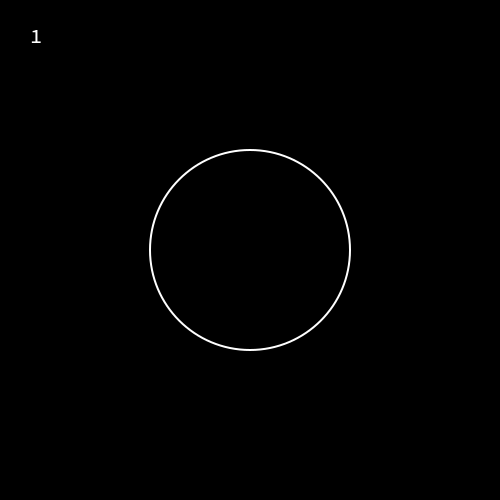

Tutorial 10: Animating Creation of Objects
A cool effect of bringing in Objects into your video/gif is to show it being drawn out incrementally from nothing.
In this tutorial we'll take a look at how you can make these kind of animations
The showcreation function
The general syntax to animate the creation of an object is
action = Action(startframe:endframe, showcreation() )
act!(obj, action)This starts the creation of the object at startframe and the object is completely drawn when the timeline reaches endframe.
lets see this in example.
using Javis
video = Video(500,500)
Background(1:120,(args...)->begin
background("black")
sethue("white")
end)
circ = Object(1:120, (args...)-> circle(O,100,:stroke))
action_showcreate = Action(1:60,showcreation())
act!(circ,action_showcreate)
render(video,pathname="createcircle.gif")
You should see a circle being created in your video. ( I've added in the frame numbers in the gif so that the beginning and end of the gif are easily identifiable )
What if we wanted to show the object being created at a later point in the timeline. Say we want it to be created at frame 30 and finish at frame 90. Thats simple! we change the frames that the Action works on . Change the line with action_showcreate in the above example to...
action_showcreate = Action(30:90, showcreation())
Oops! , Thats (probably) not what we wanted. (look at the frame numbers) . What happened was obj exists from frame 1 to 120. But the show creation acts on it from 30 to 90. So the object exists from frame 1 to 30 as it is . Then its creation is animated from 30 to 90 and from 90 to 120 it remains as such.
One way to mitigate this is to change the frames obj exists. Make this change in the code above
circ = Object(30:120, (args...)->circle(O,100,:stroke))Somethings still wrong!. One thing we forgot is the frames you mention in Action are the frames relative to the Objects existence. So what happened now is the object is put on the scene from frame 30 onwards. The action acts on it from frame 30 relative to when the object was put. So 30+30 i.e 60 is the frame at which action starts. Can you fix this ?
action_showcreate = Action(1:60,showcreation())There we go ! It turned out we dont need to change the frames of the action, but the frames of the Object. Hopefully by intentionally showing you a wrong way to do it you understood the working of Actions a little better.
Another way is to have the object present throughout the video and to "hide" it initially till it is to be shown, with an action that sets the objects opacity to 0.
There exists a similar function showdestruction() which does exactly the opposite of showcreation().
Author(s): John George Francis (@arbitrandomuser) Date: May 28th, 2022
Tag(s): action, morphing, object, animation